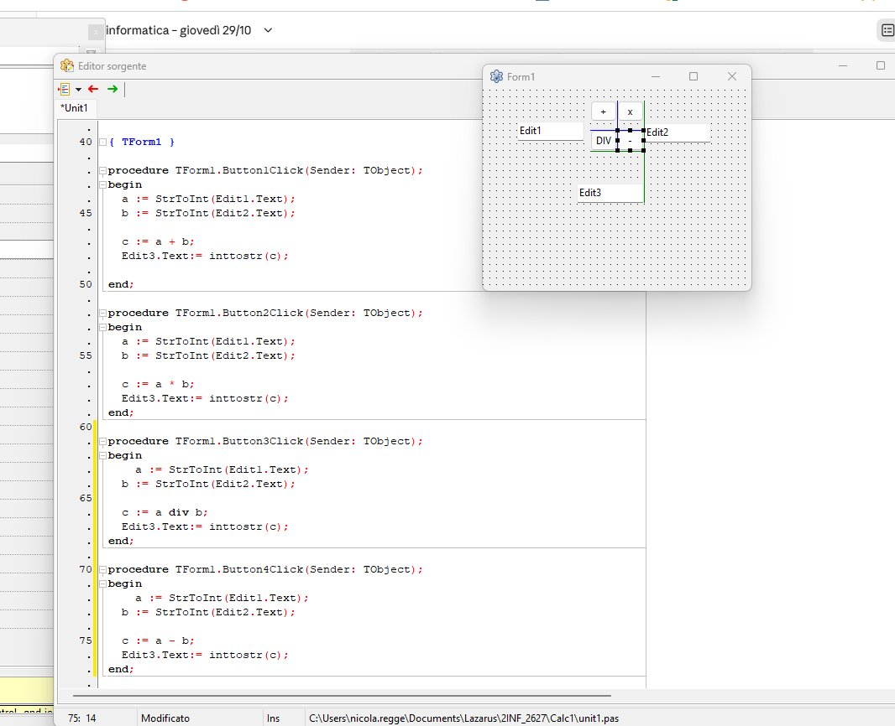

La calcolatrice v1.2: meno e diviso
2INF · giovedì 29/10/2026 · Lazarus e GitHub · un passo alla volta
I bottoni si aprono in una scheda nuova: quando hai finito, chiudi quella scheda e torni qui.
La versione 1.2: quattro operazioni
Regola delle versioni: aggiungo una cosa nuova = sale il numero dopo il punto (v1.0 → v1.2); il primo numero sale solo quando il programma cambia tutto.

Prima hai finito la versione 1.0? Se no, torna alla calcolatrice versione 1.0.
Il controllo del mio GitHub
La pagina guarda il tuo repository «lazarus» ogni pochi minuti. Qui vedi che cosa va bene e che cosa manca.
Bloccato?
Scrivi la domanda all'assistente qui sotto, anche con uno screenshot. Al prof solo per problemi del PC o dell'account.
Sbagliare è normale: succede a tutti i programmatori, anche ai più bravi. Con Torna al passo prima rifai un passo quando vuoi.